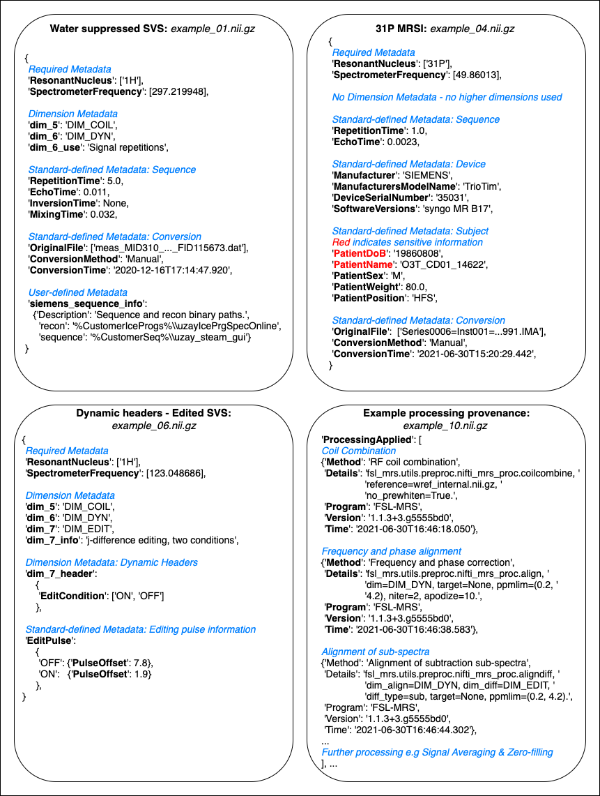

What’s in the header extension?¶
The header extension contains four types of metadata key:
The two mandatory keys
SpectrometerFrequency&ResonantNucleus. These must be present in all NIfTI-MRS formatted files, because they are a necessary requirement for correct reconstruction and interpretation of the time-domain data.Standard-defined metadata. These keys correspond to well-defined and frequently used sequence, hardware, or subject data. They are defined in the NIfTI-MRS standard and may not be redefined. These keys are optional.
User-defined metadata. Keys can be arbitrarily defined by users to store unusual metadata, that not foreseen in the standard, or that for which no fixed format or recommendations exist. User-defined JSON metadata permits additional fields for user-defined keys, encouraging in-place documentation to aid interpretation of the keys. These keys are entirely optional.
Higher dimension information. Three keys are defined per additional encoding dimension (n=5,6,7):
dim_{n},dim_{n}_info, anddim_{n}_header.
1. Required metadata¶
Two pieces of information are required to make a legal NIfTI-MRS file:
The spectrometer frequency - stored in MHz
The resonant nucleus - stored as a coded string (1H, 31P etc.)
The string encoding the nucleus is the mass number followed by the element symbol.
Both are defined as JSON arrays (of numbers and strings respectively) as MRS experiments can have more than one associated nucleus.
One other piece of the puzzle is needed, the dwell time. However this is stored in the element of the NIfTI file header field pixdim corresponding to the time domain dimension. This is the 5th element pixdim[4] as the 1st element is used for an alternative use.
2. Standard defined metadata¶
In addition to the required metadata, data might be needed for more meaningful interpretation of the stored data. For example storing information on basis simulation; relaxation correction; subject, sequence and scanner information; or editing pulse information.
The NIfTI-MRS standard defines a set of optional metadata key-value pairs which encode common acquisition and sequence parameters. In the specification the names, data types and descriptions of the keys is explicitly defined. The list of standard defined metadata is available in the Standard, section 5.
Users may define their own keys (see next section) in addition to those specified here, but must not change the meaning of existing keys specified in the standard.
Anonymisation tags¶
Standard-defined metadata keys are given a standard anonymisation flag which marks the key for deletion or retention upon anonymisation. This information is given in the Standard, section 5.
3. User defined metadata¶
To supplement the standard defined metadata and provide complete freedom for users to flexibly use NIfTI-MRS, metadata keys may be arbitrarily defined (excluding reserved keys).
The standard encourages users to create user defined keys as a nested JSON object, containing value keys, and in-place description keys. For example
{
“Excitation pulse duration”:
{ “Value” : 3.0,
“Description” : “Duration of the excitation pulse.”}
}
or
{
“Excitation pulse information”:
{ “Duration”: 3.0,
“Pulse name”: ”SINC”,
“Description” : “Excitation pulse information. Duration in ms.”}
}
Keys appended with private_ at any level are marked for anonymisation.
4. Higher dimension metadata¶
This metadata is required to identify the purpose of the higher encoding dimensions (the 5th-7th dimensions).
One key per dimension is required: dim_{n}. This key uses a list of predefined tags to make the dimensions encoding use. These tags are listed below.
The optional key dim_{n}_info provides a human readable description of the dimensions purpose.
dim_{n}_header allows the user to define metadata that changes with the index along the dimension. This key is optional, and its use is described in more detail below.
Defined Dimension Tags¶
The following tags are defined for dimension identification.
Value |
Meaning |
|---|---|
DIM_COIL |
For storage of data from each individual receiver coil element. |
DIM_DYN |
For storage of each individual acquisition transient. E.g. for post-acquisition B0 drift correction. |
DIM_INDIRECT_{N} |
The indirect detection dimension - necessary for 2D (and greater) MRS acquisitions. |
DIM_PHASE_CYCLE |
Used for the time-proportional phase incrementation method. |
DIM_EDIT |
Used for edited MRS techniques such as MEGA or HERMES. |
DIM_MEAS |
Used to indicate multiple repeats of the full sequence contained within the same original data file. |
DIM_USER_{N} |
User defined dimension. |
DIM_ISIS |
Dimension for storing image-selected in vivo spectroscopy (ISIS) acquisitions. |
Using the dim_{n}_header key¶
The optional 5th, 6th and 7th data dimensions can store data acquired under dynamically changing acquisition conditions, e.g. with spectral editing or non-uniformly varying parameters. For example, the 5th dimension could be tagged DIM_INDIRECT_{N} or DIM_USER{N}, specifying a description in dim_5_info, and associating one or more metadata keys by specifying dim_5_header.
The values of the associated metadata for each dimension index can then be specified in two ways.
For standard-defined metadata, the value at each dimension index can be described:
fully, by using a JSON array of length equal to the size of the dimension,
in abbreviated form, using a JSON object with fields “start” and “increment”.
The units and form of each element should match the metadata key specification in Standard, section 5.
For user-specified metadata the format described in the previous section should be followed, using a JSON object, including a “Description” field with the iterable array or short format contained in “Value”.
Example header extensions¶
{kind=link}
Extracts of NIfTI-MRS JSON-formatted header extensions for four different pieces of example data. The full example data is available from Zenodo. Each example demonstrates a different aspect of the header extension format. Figure annotations are shown as blue italicised text. A: Structure of a header extension of 1H single-voxel data before pre-processing. B: Header extension for processed 31P MRSI, including fields that are marked for anonymisation (red). C: Example of dynamic header fields indicating an editing condition stored in the 7th dimension. D: Extract of the processing provenance in a MEGA-PRESS sequence pre-processed using FSL-MRS.